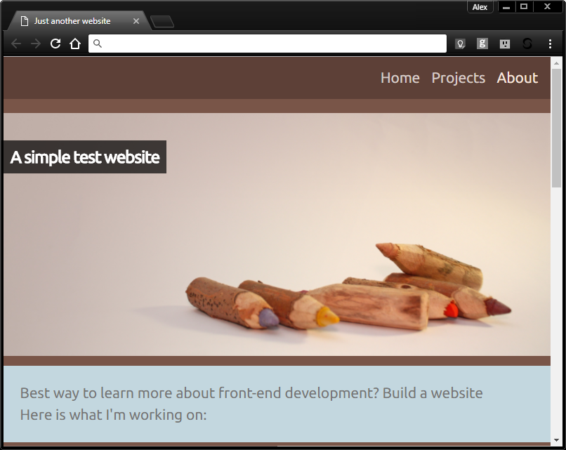
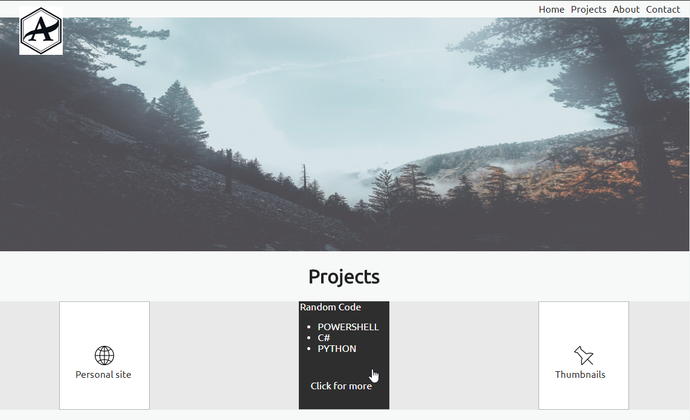
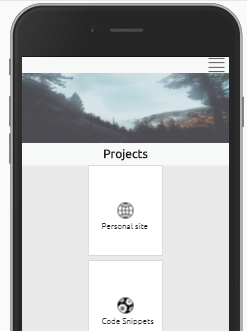
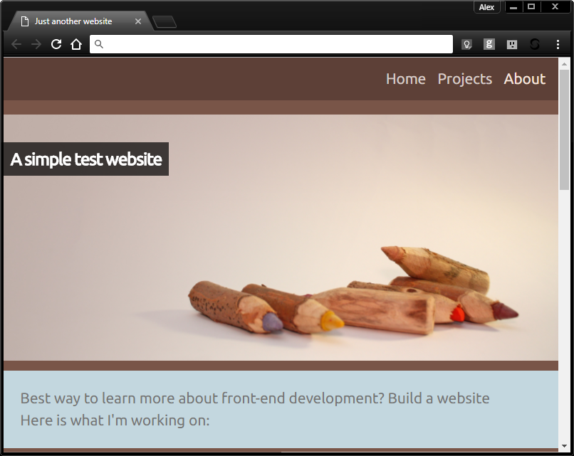
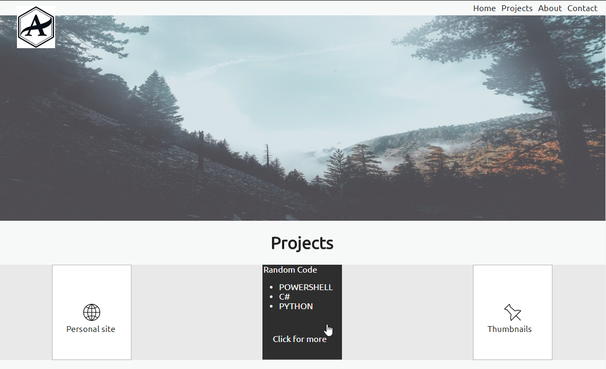
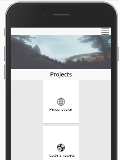

Goal:
While I had worked with HTML in some form for years, a lot of my experience was based on using a framework like Bootstrapper or modifying a web template to suit my needs. In order to learn more about concepts like the box model, inheritance and HMTL5 I decided to write my own portfolio website from scratch.
I started by wireframing what I wanted the site to look like and setting out the goals of the project. In the first phase I decided to only focus on HTML and CSS and reformat periodically as I learned new skills. After a few mock-ups I decided on a simple clean look, with a large header and a few 2 & 3 column sections. Along the way I decided to try out two different approaches to styling a multi-column layout: the projects section makes use of the columns css property while the footer makes use of a grid view. The next steps will be investigating flex box and maybe a more robust grid system.
 





Goal:
I really likedthe Odin Project approach to learning and decided to follow along with their curriculum.
One of the first projects is building a basic mock-up of the google homepage, while making sure the project is properly saved on github. I also made sure to add my solution to the contributor’s page of the Odin project repository. Overall an interesting exercise in cloning, forking and general usage of git. The html and CSS aspect wasn't too difficult, although it gave me an opportunity to play around with styling forms and positioning items. The search bar itself was probably the most interesting/ challenging part as it involved carefully positioning an image and having a "hint" hover over. I'm sure jquery could have handled it easier, but I wanted to stick with pure HTML and CSS for this project.
The actual link to the page: https://dracken2332.github.io/google-homepage/